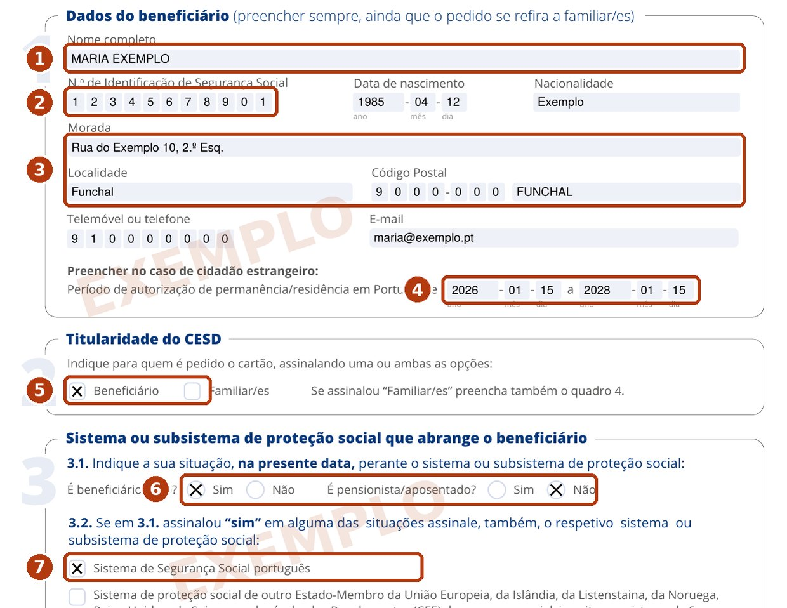
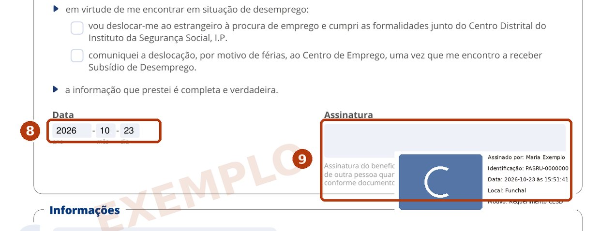
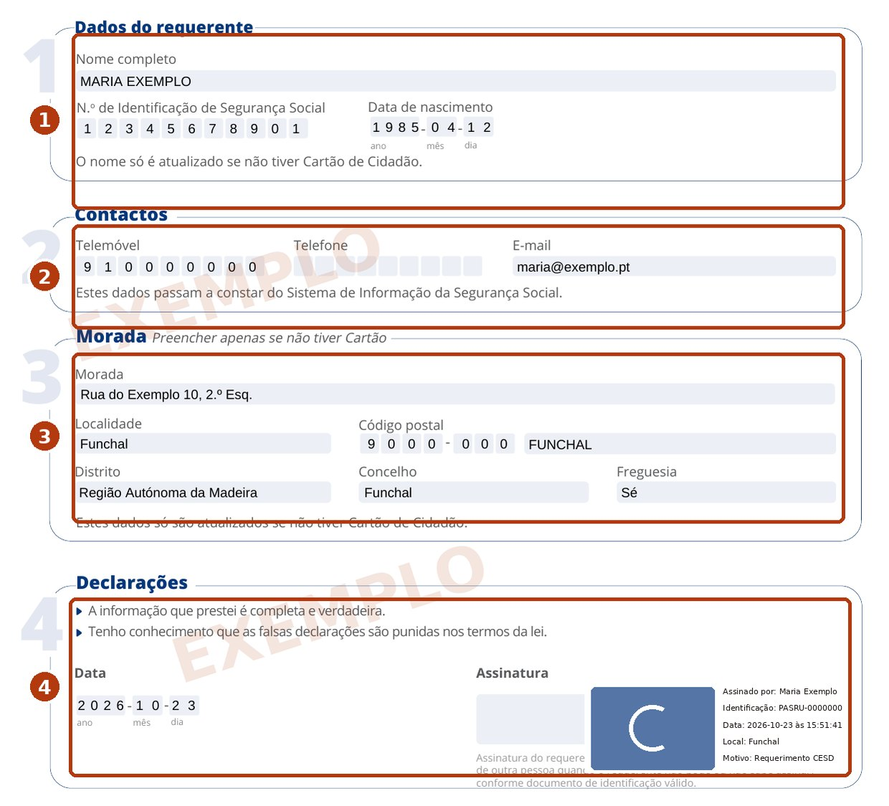
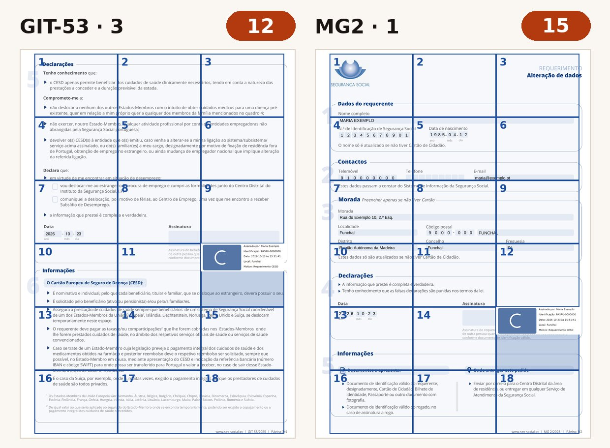

Con esta tarjeta, en cualquier país de la UE le atienden en la sanidad pública en las mismas condiciones que a los residentes. Es gratuita. Abajo, el camino que hicimos nosotros: del rechazo online a los formularios enviados, con modelos rellenados y firma sin impresora.
Ir directo a la solicitudFiebre en Praga, una intoxicación en España, un brazo roto esquiando en Italia: atención en el hospital público en las condiciones locales. A menudo gratis o con un pequeño copago.
Recetas de un médico local y análisis pedidos en la sanidad pública — con los copagos locales.
Diálisis, oxígeno o quimioterapia durante el viaje también están cubiertos. Solo hay que acordarlo antes con el centro.
Controles y parto durante una estancia temporal están cubiertos, salvo que el viaje sea para dar a luz.
La tarjeta no vale en cinco países: Dinamarca, Islandia, Liechtenstein, Noruega y Suiza. Las excepciones son refugiados y familiares de ciudadanos de la UE.
En todos los demás países de la UE funciona. Sobre el Reino Unido para nacionales de terceros países no encontramos una respuesta clara: consúltelo con la Segurança Social antes de viajar.
Segurança Social Direta → Doença → «Obter Cartão Europeu de Seguro de Doença» → «Iniciar pedido». Si le deja avanzar, la tarjeta llega por correo y no hace falta seguir leyendo.
¿Ve esta frase? Es el rechazo del formulario, no de la tarjeta. Fue nuestro caso: extranjero con permiso de residencia en Madeira. La Segurança Social nunca explicó el motivo, pero sí envió la lista de documentos. Siguen ocho pasos.
Atualmente não reúne condições para solicitar o CESD por esta via
Segurança Social Direta → Contactos → «Canal e-Clic» → «Registar pedido». Tema: Cartão Europeu de Seguro de Doença. Como motivo elija «Esclarecer dúvidas sobre a minha situação». No elija «Apresentar um pedido»: le devuelve al mismo formulario online que la rechazó. El texto está abajo; complete nombre y municipio.
Envolvido: o próprio (titular), [NOME COMPLETO], trabalhador independente, residente em [CONCELHO], com NISS ativo. Assunto: Cartão Europeu de Seguro de Doença (CESD). Pedido: ao tentar pedir o CESD na Segurança Social Direta, surge a mensagem «Atualmente não reúne condições para solicitar o CESD por esta via». Não tenho nenhum cartão emitido anteriormente. Solicito que me informem o motivo e procedam à emissão do CESD em meu nome, ou me indiquem como devo fazer o pedido e que documentos são necessários. Junto, desde já, o Modelo GIT-53 e o Modelo MG2 preenchidos e assinados, e a cópia do título de residência. Obrigado.
¿No es autónomo? Cambie «trabalhador independente». Deje la última frase solo si adjunta ya los formularios.
Puede ahorrarse tres semanas. Rellene y firme el GIT-53 y el MG2 (pasos 3–5) y adjúntelos, con el permiso de residencia, a la primera solicitud. Probablemente no tendrá que esperar a que se los pidan. Nosotros no lo hicimos: es una suposición, no un camino probado.
Nos respondieron a los 18 días: enviar el modelo GIT-53, el modelo MG2 y una copia del permiso de residencia. La solicitud pasó a «Pendente de Informação», con 30 días para responder; si no, se archiva. Los formularios en blanco están en la propia solicitud, pestaña «Documentos», y en la web de la Segurança Social.
Formularios en la web de la Segurança SocialCuatro páginas; se rellenan la primera y la tercera. Abajo, un modelo con datos ficticios; los números de la imagen se explican debajo.


El formulario «Alteração de dados», una página. La Segurança Social lo pide junto con la copia del permiso; según entendemos, para verificar sus datos y la dirección a la que se envía la tarjeta.

Un servicio público gratuito: cmd.autenticacao.gov.pt → «Assinatura de Documentos». Necesita la firma de la CMD activada y su PIN. Archivos de hasta 3 MB. Se firma cada formulario por separado.

Las dos caras en una hoja, archivo de hasta 3 MB. Con el móvil: la tarjeta sobre una mesa oscura y lisa, luz de día, sin flash, móvil paralelo a la tarjeta, enfoque tocando la línea de los números. El flash hace reflejo en el holograma y el NIF y el NISS dejan de leerse.
Abra la solicitud → «Responder ao pedido». Pegue el texto de abajo y luego «Adicionar documento», un archivo cada vez: GIT-53, MG2, permiso. Después «Enviar resposta»; el estado pasa a «Em Análise». La sesión de la Segurança Social es corta: tenga los archivos listos antes; la nuestra caducó a mitad.
Exmos. Senhores, Na sequência do pedido de informação, junto os documentos solicitados para a emissão do Cartão Europeu de Seguro de Doença (CESD): 1. Modelo GIT-53, devidamente preenchido e assinado; 2. Modelo MG2, devidamente preenchido e assinado; 3. Cópia do título de residência (frente e verso). Fico ao dispor para qualquer esclarecimento adicional. Com os melhores cumprimentos, [NOME COMPLETO] NISS [NÚMERO]
Según la Segurança Social, la tarjeta llega por correo en 5 a 7 días hábiles tras su emisión, a la dirección registrada. ¿Viaja antes? Pida el Certificado Provisional Sustitutorio (CPS): tiene el mismo valor legal y vale tres meses.
Nada. Las webs que cobran por la «tramitación» son intermediarios: solo la Segurança Social emite la tarjeta.
Sí, cada uno la suya. Los familiares a su cargo pueden ir en la casilla 4 del mismo GIT-53.
Sí: imprimir los formularios, firmar a mano y escanear, o entregarlos en una oficina de la Segurança Social. En Madeira, el ISSM.
No. No paga clínicas privadas, rescates ni repatriación.
Tres años. Se renueva online o en persona.
Igor Kartuzov, SeedWave. Hago este camino yo mismo desde septiembre de 2026. Los modelos llevan datos ficticios; las posiciones de la firma, los plazos y los mensajes salen de mi propia solicitud. Si a usted le fue distinto, escríbame en LinkedIn y actualizo la página.